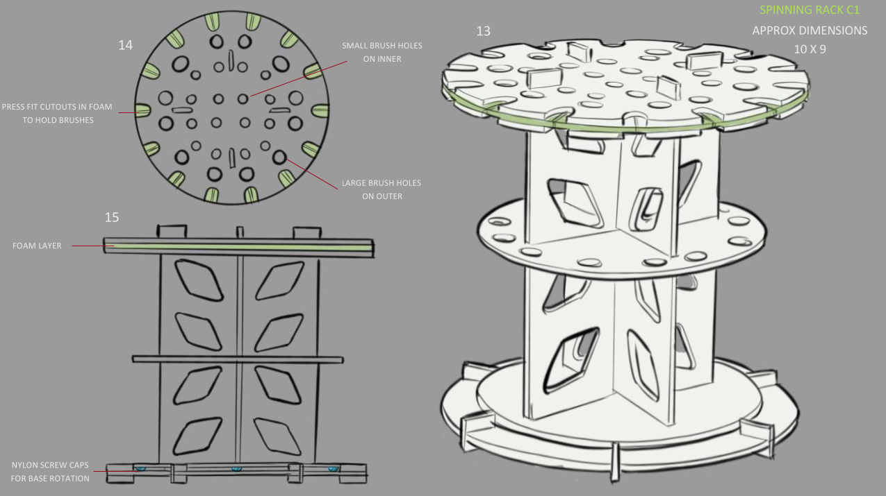
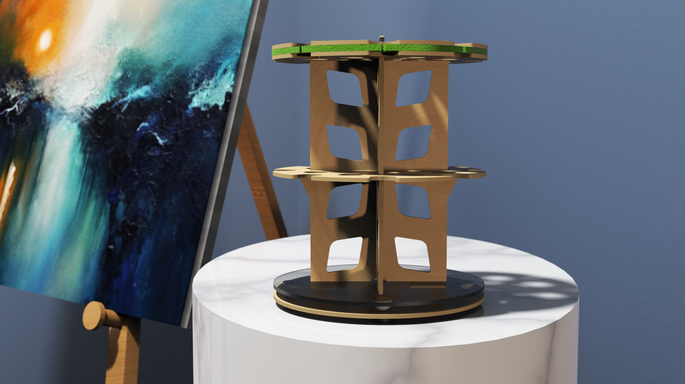

Streamlining your studio supplies for easy access and a clutter-free workspace.
Jerry's Artarama wanted to expand their proprietary Mezzo brush rack series by creating a new line including a general organiser rack for drawing and a watercolor rack. The racks needed to align with their easy-to-use, easy-to-assemble identity and provide the right features for watercolor painting.
Through concept sketches, I communicated ideas and features to the client. This quick method of product development allowed me to refine the products and focus on creating CAD models and prototypes for further evaluation.
CAD models and intial renderings communicated details such as product assembly, intial material choices and part quantities giving the client a good indication to the investment of cost that would be needed to manufacture.
Final renderings were then provided to the client, capturing all the design decisions that had been made to this point, providing confidence and satisfaction to the client that they could take forward with them to manufacturing.
Jerrys Artarama Art Supplies